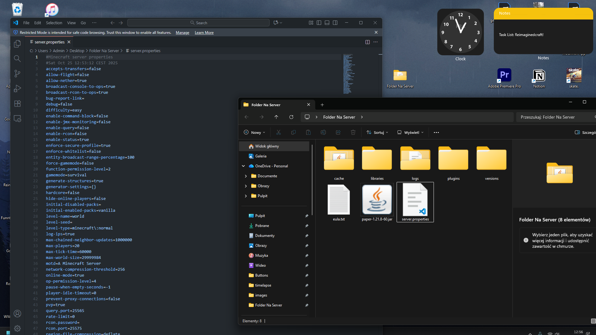
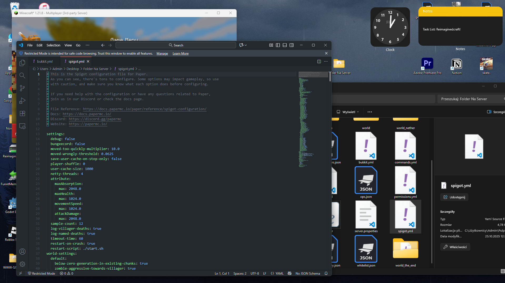
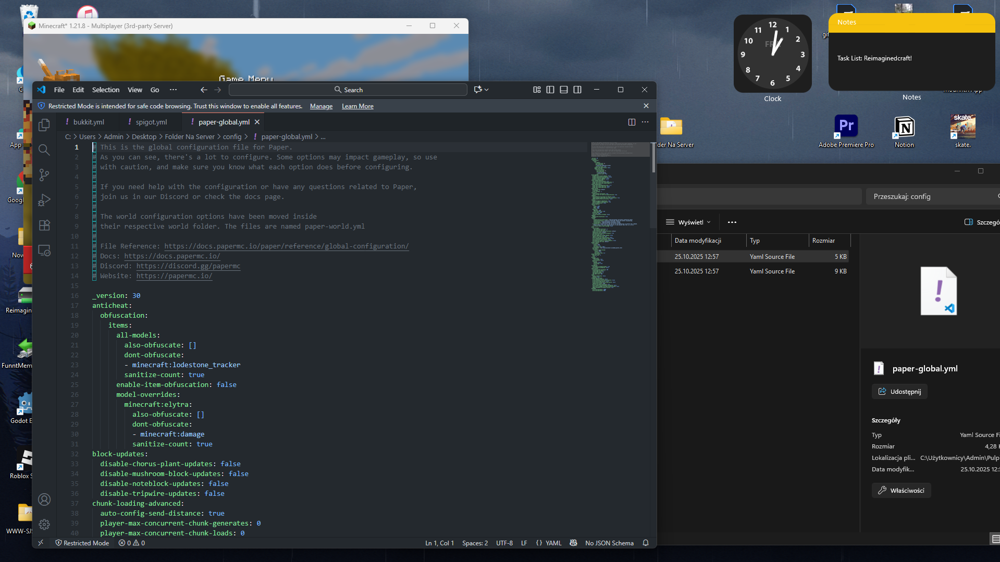
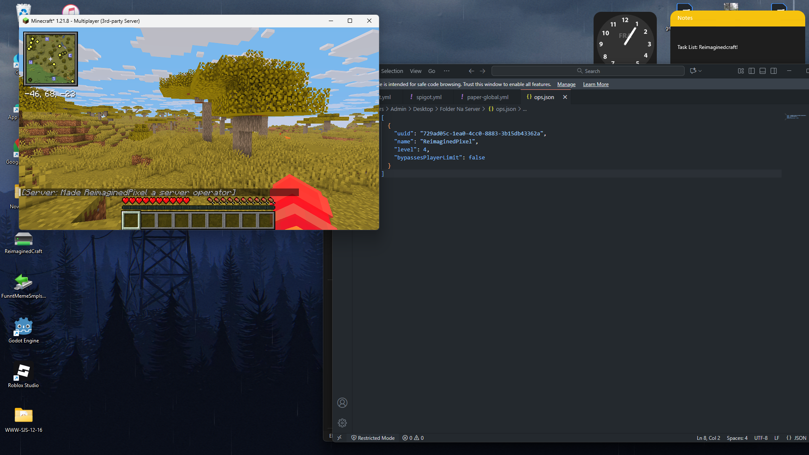

📄 Plik server.properties
Główny plik konfiguracyjny serwera Minecraft. Zawiera podstawowe ustawienia dotyczące rozgrywki i funkcjonowania serwera.
Najważniejsze opcje
| Opcja | Opis | Rekomendacja |
|---|---|---|
| max-players | Maksymalna liczba graczy | Dopasuj do zasobów RAM |
| view-distance | Zasięg widoczności chunków | 6-10 dla wydajności |
| simulation-distance | Zasięg symulacji | 4-8 zalecane |
| difficulty | Poziom trudności | easy/normal/hard |
| gamemode | Domyślny tryb gry | survival/creative |
| pvp | Walki między graczami | true/false |
| spawn-protection | Rozmiar ochrony spawna | 16 blokówomyślnie |
| online-mode | Weryfikacja kont premium | true (zawsze!) |
Uwaga! Nigdy nie ustawiaj online-mode=false na publicznym serwerze! To pozwala na wchodzenie crackowanym kontom i jest niezgodne z regulaminem Mojang.
Przykładowa konfiguracja
# Podstawowe ustawienia
max-players=50
view-distance=8
simulation-distance=6
difficulty=hard
gamemode=survival
# Bezpieczeństwo
online-mode=true
enable-command-block=false
spawn-protection=16
# Wydajność
network-compression-threshold=256
entity-broadcast-range-percentage=100

📝 Konfiguracja Bukkit.yml
Plik bukkit.yml zawiera ustawienia specyficzne dla serwerów opartych na Bukkit/Spigot/Paper.
Kluczowe sekcje
Ustawienia spawnu mobów
spawn-limits:
monsters: 70
animals: 10
water-animals: 5
water-ambient: 20
ambient: 15
Zmniejszenie tych wartości może znacząco poprawić wydajność, szczególnie na serwerach z wieloma graczami.
Chunk ticking
chunk-gc:
period-in-ticks: 600
load-threshold: 0
ticks-per:
animal-spawns: 400
monster-spawns: 1
water-spawns: 1
water-ambient-spawns: 1
ambient-spawns: 1

🔧 Konfiguracja Spigot.yml
Spigot.yml oferuje dodatkowe opcje optymalizacyjne i funkcjonalne.
Optymalizacje wydajności
world-settings:
default:
# Merge radius dla itemów
merge-radius:
item: 2.5
exp: 3.0
# Entity activation range
entity-activation-range:
animals: 32
monsters: 32
raiders: 48
misc: 16
water: 16
villagers: 32
flying-monsters: 32
# Tick rates
mob-spawn-range: 6
entity-tracking-range:
players: 48
animals: 48
monsters: 48
misc: 32
other: 64
Pro tip: Zmniejszenie entity-activation-range może znacznie poprawić TPS na dużych serwerach.
Ustawienia gracza
players:
disable-saving: false
settings:
save-user-cache-on-stop-only: false
sample-count: 12
bungeecord: false
player-shuffle: 0
user-cache-size: 1000
moved-wrongly-threshold: 0.0625
moved-too-quickly-multiplier: 10.0
timeout-time: 60
restart-on-crash: true
restart-script: ./start.sh

📜 Paper - Zaawansowane Opcje
Paper oferuje najbardziej zaawansowane opcje konfiguracyjne poprzez plik paper-world-defaults.yml (Paper 1.19+) lub paper.yml (starsze wersje).
Antycheat i antyeksploity
anti-xray:
enabled: true
engine-mode: 2
max-block-height: 64
update-radius: 2
lava-obscures: false
use-permission: false
hidden-blocks:
- copper_ore
- deepslate_copper_ore
- gold_ore
- deepslate_gold_ore
- iron_ore
- deepslate_iron_ore
- coal_ore
- deepslate_coal_ore
- lapis_ore
- deepslate_lapis_ore
- mossy_cobblestone
- obsidian
- chest
- diamond_ore
- deepslate_diamond_ore
- redstone_ore
- deepslate_redstone_ore
- clay
- emerald_ore
- deepslate_emerald_ore
- ender_chest
Anti-Xray: Engine-mode 2 jest najbardziej efektywny, ale może minimalnie obciążyć serwer.
Optymalizacje redstone
redstone-implementation: ALTERNATE_CURRENT
fix-climbing-bypassing-cramming-rule: true
fix-curing-zombie-villager-discount-exploit: true
Chunk loading
max-auto-save-chunks-per-tick: 24
prevent-moving-into-unloaded-chunks: true
delay-chunk-unloads-by: 10s

👥 Whitelist i Operatorzy
Zarządzanie dostępem do serwera i uprawnieniami administratorów.
Włączanie whitelisty
W server.properties ustaw:
white-list=true
Komendy whitelisty
| Komenda | Opis |
|---|---|
| /whitelist add <gracz> | Dodaje gracza do whitelisty |
| /whitelist remove <gracz> | Usuwa gracza z whitelisty |
| /whitelist list | Pokazuje listę graczy |
| /whitelist on | Włącza whitelistę |
| /whitelist off | Wyłącza whitelistę |
| /whitelist reload | Przeładowuje whitelistę |
System operatorów
Operatorzy mają pełne uprawnienia administratorskie. Nadawaj je ostrożnie!
# Nadanie uprawnień operatora
/op <nick>
# Sprawdzenie poziomu OP (0-4)
# Poziom 4 = pełne uprawnienia
Bezpieczeństwo: Nigdy nie nadawaj OP osobom, którym nie ufasz w 100%. Operatorzy mogą wykonać dowolne komendy, w tym niszczące!
Plik ops.json
Operatorzy są zapisywani w pliku ops.json:
[
{
"uuid": "069a79f4-44e9-4726-a5be-fca90e38aaf5",
"name": "Notch",
"level": 4,
"bypassesPlayerLimit": false
}
]

Następny krok: Po skonfigurowaniu podstawowych ustawień, przejdź do rozdziału Optymalizacja aby maksymalnie wykorzystać potencjał serwera!